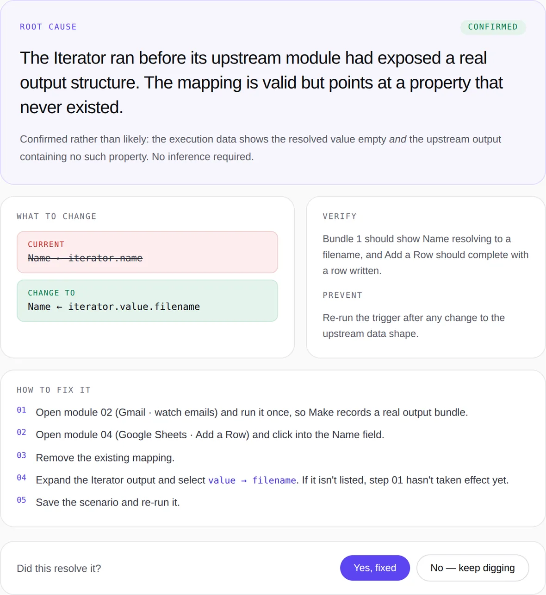

WebhookMap itemsRouter✕Google Sheets
A module fails. Start from the error.
Start with an error or symptom. Add a blueprint and execution data to explore likely causes, supporting evidence, and what to check next.
FixScenario in three steps: start with an error; review possible causes and evidence; apply a supported change and test it in Make.
The error names a module, not a reason. So the hunt starts.
From a broken scenario to a clearer next step.
The error, the symptom, and your blueprint if you have it.
It reads the workflow around the failure, not just the message.
Likely causes, next checks, and supported field changes.
An illustrative result: observed data, possible causes, and a change to verify in Make.
In this illustrative example, the mapped property is absent from the supplied Iterator output. The reason still needs verification.
The empty mapping is observed in the supplied data. A missing property alone does not prove why the structure differs.

FixScenario brings Make-specific checks and supplied workflow context into one diagnostic process.
“Check your credentials and try again.”
Generic advice without the scenario context in this example.
“Check whether this connection has the scope required for the Gmail operation.”
The same error can have different causes. Evidence helps narrow them down.
Make names the module reporting the error. With correlated execution evidence, FixScenario can trace supported dependencies upstream.
Not the wording of the message. What each neighbour promised, and what it actually produced on the failed run.
Recognized secrets are masked on the server before analysis. Detection is not exhaustive: remove sensitive data before uploading.
Confirmed observations refer to supplied execution evidence. A likely cause remains a hypothesis; the fix must be tested in Make.
The field, the bundle, the module it came from. Anything that cannot be traced is labelled an inference, not a fact.
When several causes stay compatible with the data, it says so and names what would settle it. During the free offer, each completed analysis uses one credit. Paid diagnostic quotas only count conclusive results.
Start with the error. Add context to trace supported dependencies and refine the checks or correction.
Your first 3 completed analyses are free. Subscription checkout is not open yet.
Monthly billing · Prices exclude tax
For a freelancer.
€49 / month excluding tax. 100 conclusive diagnostics per calendar month.
Choose SoloFor larger teams and organizations.
€399 / month excluding tax. 20 team seats included.
Choose EnterpriseThe error text, or just a description of the symptom. Blueprint and execution data are optional, but they sharpen the diagnosis.
Processing time depends on the scenario and supplied context. We have not yet validated a typical resolution time on production cases.
It says so, and lists what it ruled out. In the free offer, an inconclusive analysis still uses one of your 3 credits. With a paid plan, it does not use your diagnostic quota.
No. It suggests checks and, for supported cases with sufficient evidence, precise field changes. You apply and test them in Make.
FixScenario organizes Make-specific checks, supplied blueprint context and analysis history in one workflow.
FixScenario works with the exports and execution evidence you provide. It does not connect to or execute your Make account.
No. FixScenario is an independent product, not affiliated with Make.com.
Recognized sensitive fields are masked on the server before analysis. Detection has limits; remove sensitive data before uploading.
Analyses are stored for history. Owners can delete analyses; shared-space permissions apply. The production backup retention policy is being finalized.
Personal analyses are separate from shared team spaces. Team members can access their team’s spaces according to their role; operational access is described on the security page.
Your first 3 completed analyses are free, no card required.
Paid subscriptions are not open yet. Cancellation and billing terms will be provided before checkout is enabled.
When your quota is reached, existing analyses remain available. Credit top-ups are not currently available; contact us about plan options.
Start with an error; the blueprint is optional. Your first 3 completed analyses are free.
Diagnose my workflowProduct updates by email are not open yet. Contact us with questions.
No newsletter email is collected here. Read our privacy notice.
© 2026 FixScenario. All rights reserved.
Independent product, not affiliated with Make.com or Celonis.